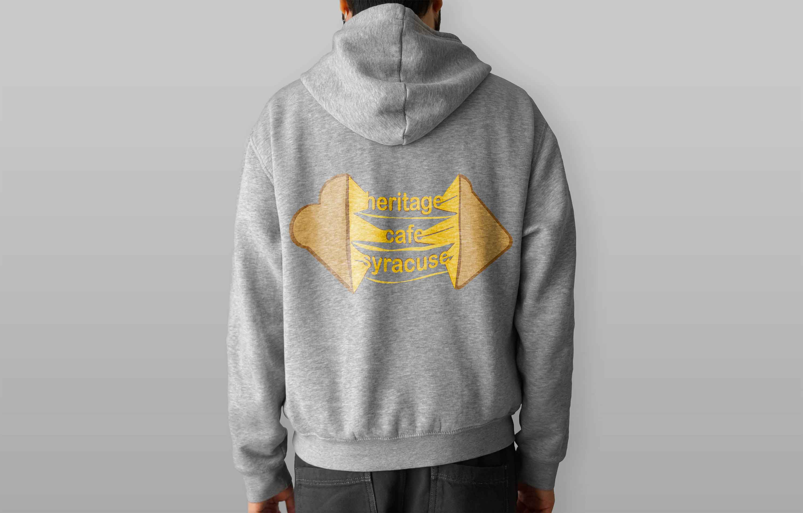
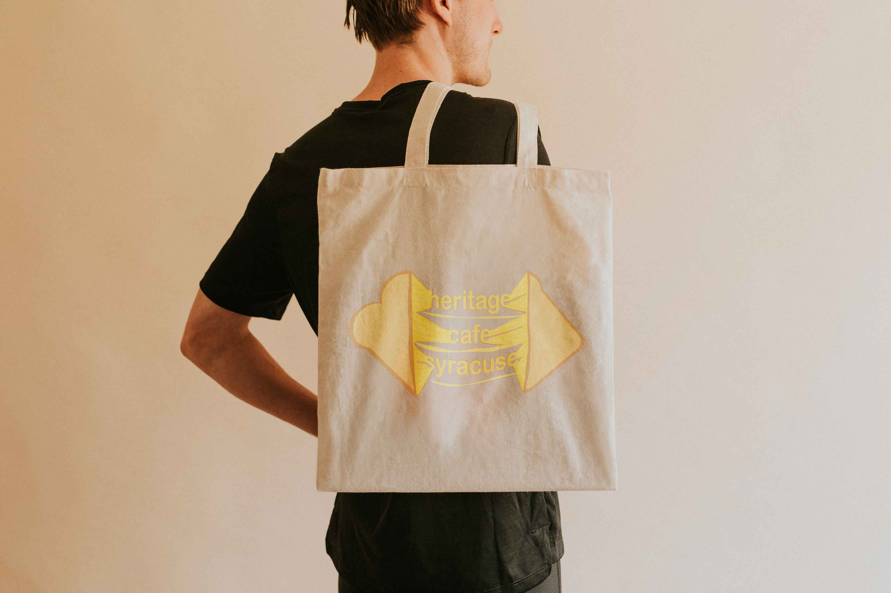
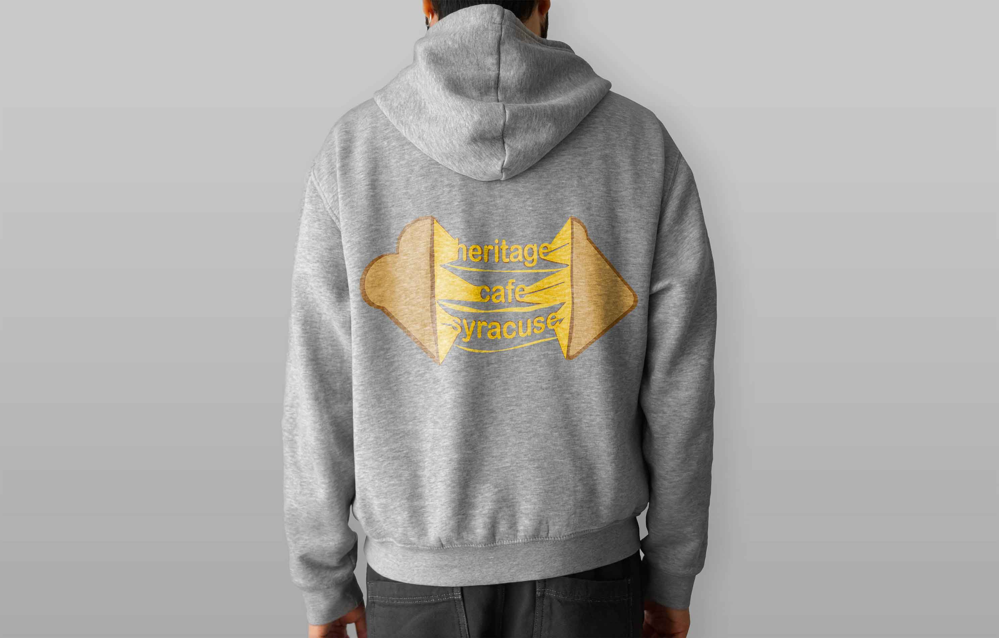
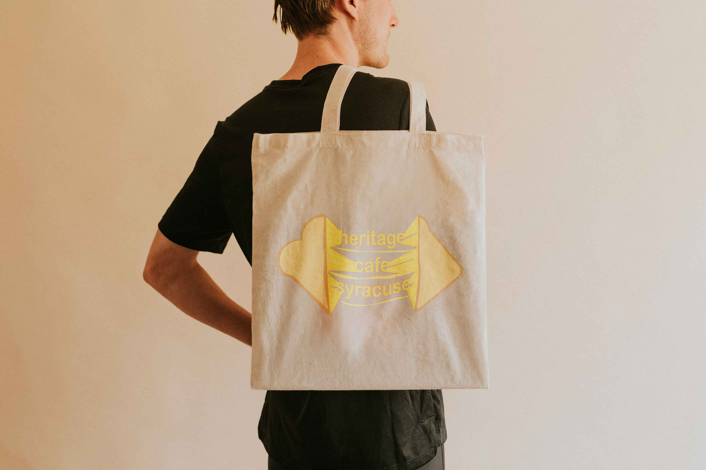
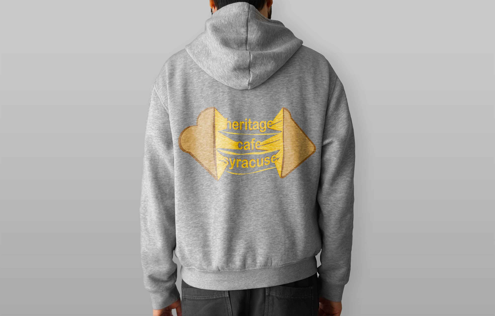
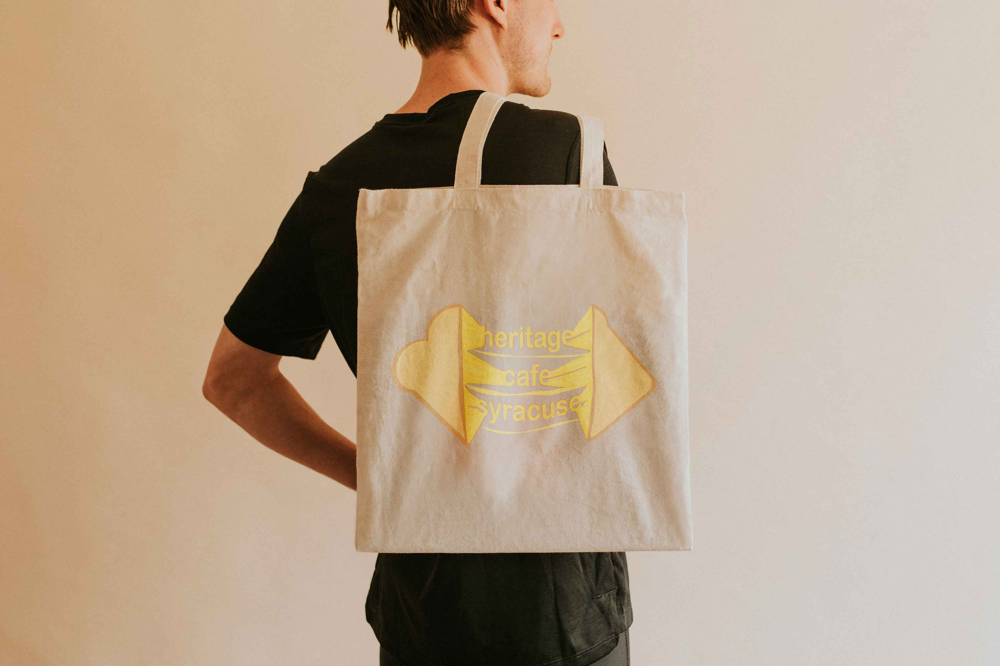

I designed the social media for the Syracuse Men’s Hockey team in 2023. This multi platform
campaign included Instagram posts and stories, Twitter graphics, and animated gifs. This
project challenged me to incorporate photo and video editing with layout design to create
templates that could be refreshed each week. By understanding the look and feel of the hockey
team I was able to maintain their personality in my campaign. Check out the Instagram for
yourself! @syracusehockey
Magazine & App Design
I created a fictional magazine with eight spreads of stunning sourced photography and AI
generated text. I kept a close eye on the small details to create seamless, professional spreads.
The article opening visual was designed in Adobe Photoshop and the entirety of the magazine
was assembled in Adobe InDesign. In addition to print, I adapted my content to the mobile scale
with interactivity using Adobe XD.
Heritage Cafe ReDesign
As a member of the nation’s top ranked university advertising club in the nation, I created a logo
redesign for one of our clients. I gave Heritage Cafe the revamp it needed to keep up with the
pace of college students and showcase their sandwich specialties. This was designed in Adobe
Illustrator and could be used on digital, print, or physical pieces for branding



-(1).jpg)

.jpg)
.jpg)


 


